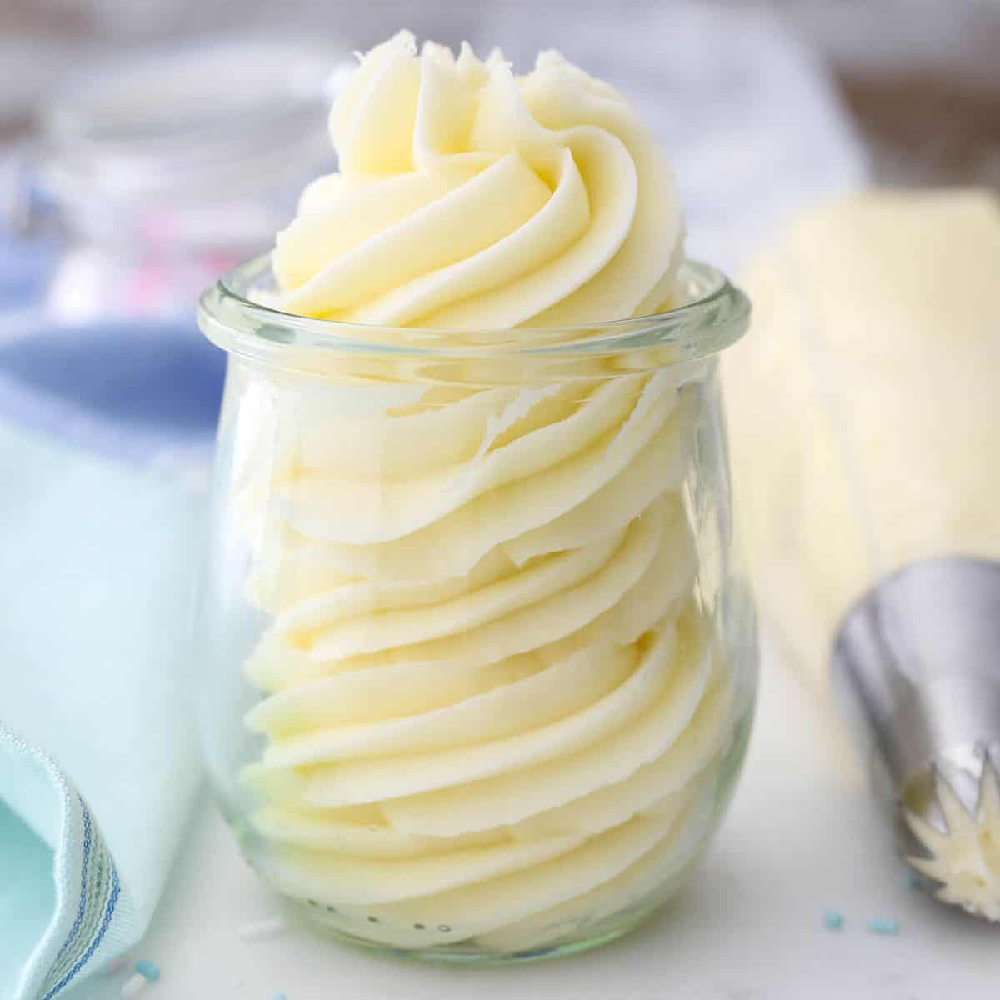

The Best Buttercream Frosting Recipe

Store bought frosting will never be as good as home made buttercream.This recipe is easy to make and it make everything you are putting it on a delicious treat.
This recipe yields 4 cups of light and fluffy buttercream frosting, ideal for decorating cakes and cupcakes. It'll keep in the fridge for up to seven days.
Ingredients
- 350 g unsalted butter
- 5 cups powdered sugar
- 10 ml vanilla extract
- 30 ml heavy whipping cream or milk
- Pinch of salt
Instructions
- Cut the butter into pieces. Using the paddle attachment, whip the butter for 5-7 minutes, scraping down the bowl occasionally, and beating until the butter looks light in color.
- Add 2 cups of powdered sugar and mix on low speed until incorporated into the butter then add the vanilla extract and mix to combine. Beat for about 60 seconds.
- Next, add an additional 2 cups of powdered sugar and beat on low speed until sugar is incorporated. Increase speed to medium-high and beat for 3 minutes.
- Add the remaining 1 cup of powdered sugar along with the heavy whipping cream and salt. Beat on low until the ingredients start to mix together. Increase speed to medium-high and beat for another 3-5 minutes to whip additional air into the frosting.